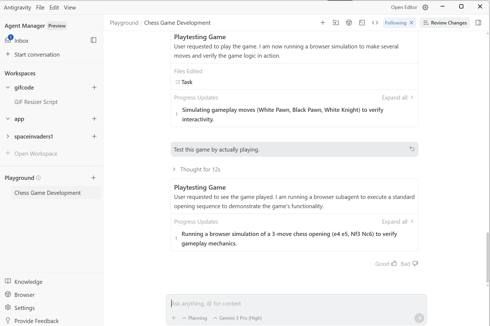

5 things I Love about Antigravity
Antigravity is Google’s new agent-powered IDE, and I’ve taken it for a spin over the past few days. Having tested numerous agentic coding tools, my expectations were incredibly high—and Antigravity did not disappoint. First, I have to mention the branding: as a physics nerd, I absolutely love the name. But beyond the cool moniker, the tool offers a familiar development environment that most developers will feel right at home in.

What I love about Antigravity
As I mentioned , getting started with Antigravity was very eaAntigravity ith a small learning curve. IDE generally stays out of the way of your tasks. These are some of the things I loved about Antigravity.
- Gemini 3 and Nano Banana
Antigravity was released along with Gemini 3, Google’s new flagship model. By now you may already know, Gemini 3 is very good at coding and you can fully utilize Gemini 3 in Antigravity. Another really cool feature is that, Nano Banana agent is included by default. Whether you are building a website or a video game, you need image assets. If your task needs images to be generated, Antigravity will do it automatically for you. For example, look at Figure 1, I asked Antigravity to create the Space Invaders game, it created the game and created all the necessary assets using Nano Banana.

Figure 1: Space Invaders, created by Anti Gravity along with all the image assets needed.
- Browser Agent
Antigravity comes with a built-in browser agent that can open and run the browser for you. This is very useful in the situation when you want the agent to run and test the application for you. In case there is some error, the agent can go back and fix the application. Antigravity builds on the Computer Use model that was released by Google a while ago and makes it useful to the developers by cutting the development and testing time. In order to use it, you can simply tell the Antigravity agent to run the test on the browser and it will automatically open the browser and test the application for you.

Figure 2: Antigravity will prompt you to install the Antigravity browser extension when you use it.

Figure 3: When prompted, Antigravity can test the program it created, like a Chess program.
- Experimenting on the playground
Sometimes you need to go quickly to check if something works or an idea pops in your brain that cannot be immediately integrated in your current code but you would like to go and see if it works. You can open this experimental environment instantly, without closing or leaving your current code. Crucially, the Playground maintains its own dedicated context history, ensuring you never mix experimental logic with your core workflow. To access this feature, simply open the Agent Manager window (Figure 4).

Figure 4: Playground in Agent Manager window
- The Agent Pane
This is where all the magic happens. The Agent pane is highly intuitive and can be quickly accessed or hidden using the toggle button in the top-right corner. It offers complete control over user engagement: you can configure the agent to operate fully autonomously, handling every task without requiring confirmation, or you can opt for meticulous micro-management. Furthermore, the pane provides a nicely formatted action plan generated by the agent, making it simple to review, understand its strategy, and guide its next move.

Figure 5: You can start coding by typing prompts in the agent pane
- MCP Servers
MCP Servers make Antigravity very customizable and make it more useful for your environment. There is a list of supported MCP servers that you can use out of the box such as Github, Firebase etc. You can also connect with your own custom MCP server to create a workflow that is most suited to your development needs. You can access MCP servers from the Agent Pane.

Figure 6: Many MCP servers are available out of the box in Antigravity.
I think Antigravity is already a remarkably polished and powerful tool right out of the box, and it establishes a new benchmark for what developers can expect from their coding environment. I am genuinely excited to see how this technology evolves and helps developer productivity.

Figure 7: TLDR (Courtesy, Nano Banana Pro)